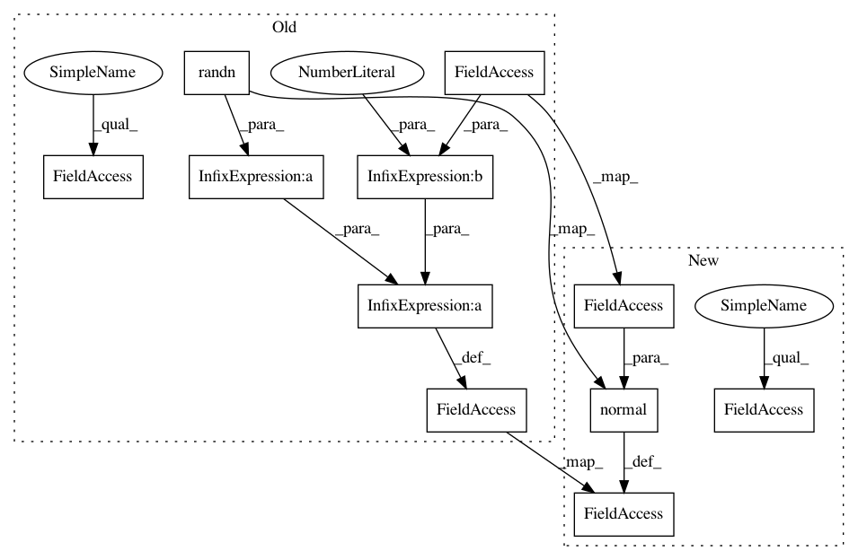

fe491dadb80345d70cf5ec0ab8bb5d1ba08f09f4,caserec/recommenders/item_recommendation/bprmf.py,BprMF,_create_factors,#BprMF#,111
Before Change
self.map_users_index.update({u: user})
def _create_factors(self):
self.p = self.init_mean * np.random.randn(self.number_users, self.factors) + self.init_stdev ** 2
self.q = self.init_mean * np.random.randn(self.number_items, self.factors) + self.init_stdev ** 2
self.bias = self.init_mean * np.random.randn(self.number_items, 1) + self.init_stdev ** 2
def _sample_triple(self):
user = np.random.choice(self.train_set["users"])
After Change
self.map_users_index.update({u: user})
def _create_factors(self):
self.p = np.random.normal(self.init_mean, self.init_stdev, (len(self.users), self.factors))
self.q = np.random.normal(self.init_mean, self.init_stdev, (len(self.items), self.factors))
// self.bias = self.init_mean * np.random.randn(self.number_items, 1) + self.init_stdev ** 2
self.bias = np.zeros(len(self.items), np.double)
In pattern: SUPERPATTERN
Frequency: 3
Non-data size: 11
Instances
Project Name: caserec/CaseRecommender
Commit Name: fe491dadb80345d70cf5ec0ab8bb5d1ba08f09f4
Time: 2017-07-26
Author: fortes.arthur@gmail.com
File Name: caserec/recommenders/item_recommendation/bprmf.py
Class Name: BprMF
Method Name: _create_factors
Project Name: caserec/CaseRecommender
Commit Name: aa5df8f6ef00d1339edfae7e2562f24e81bab995
Time: 2017-07-12
Author: fortes.arthur@gmail.com
File Name: caserec/recommenders/rating_prediction/svdplusplus.py
Class Name: SVDPlusPlus
Method Name: __init__
Project Name: caserec/CaseRecommender
Commit Name: 9d25f96af2268c5772128496aa3d8a28795e3490
Time: 2017-07-10
Author: fortes.arthur@gmail.com
File Name: caserec/recommenders/rating_prediction/matrixfactorization.py
Class Name: MatrixFactorization
Method Name: _create_factors